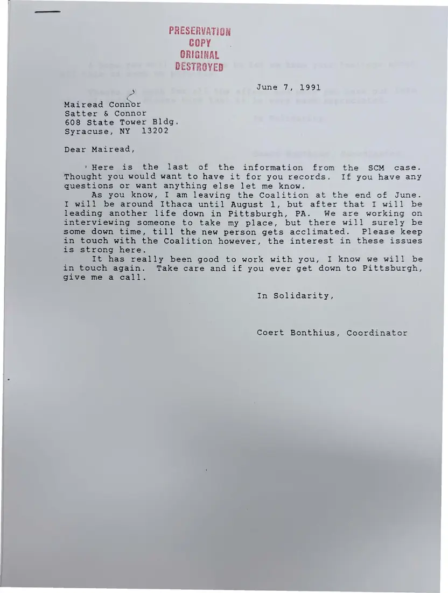
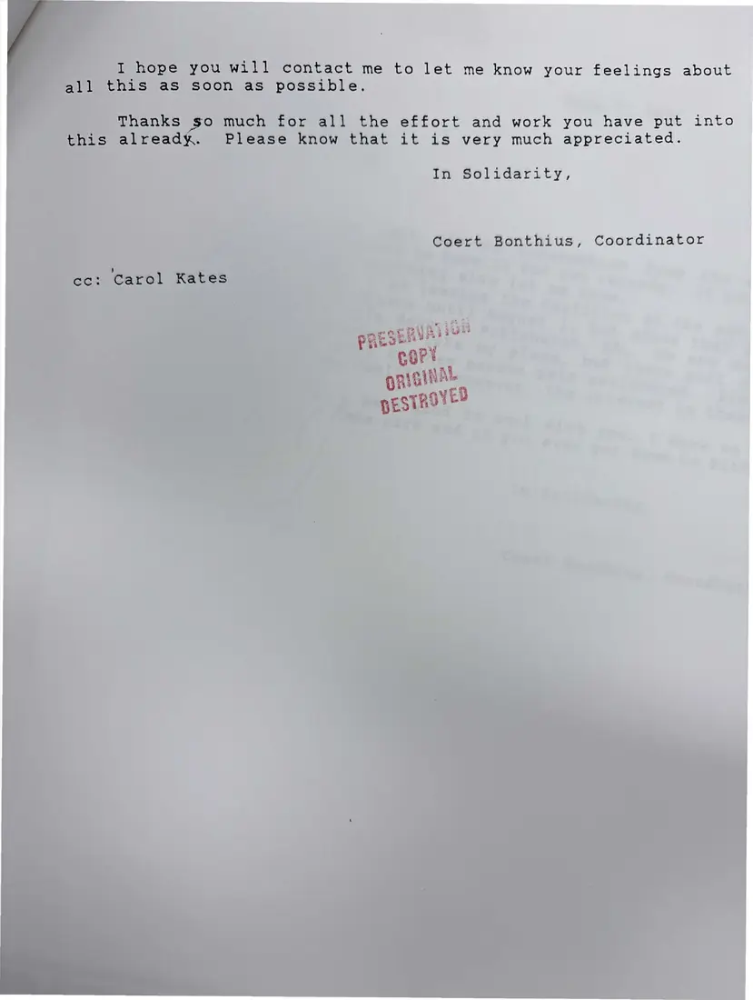
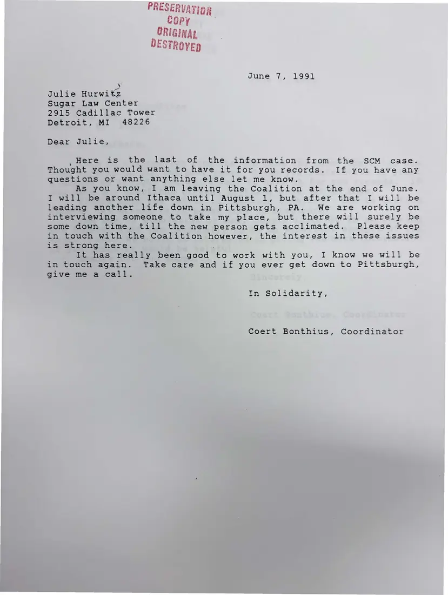
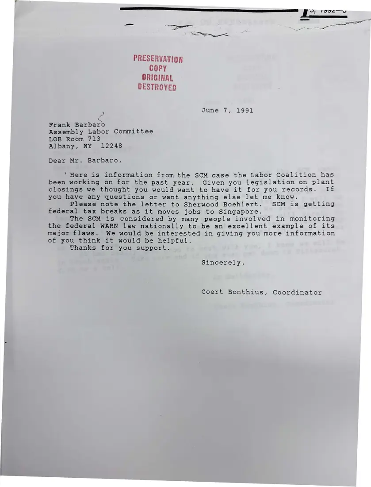
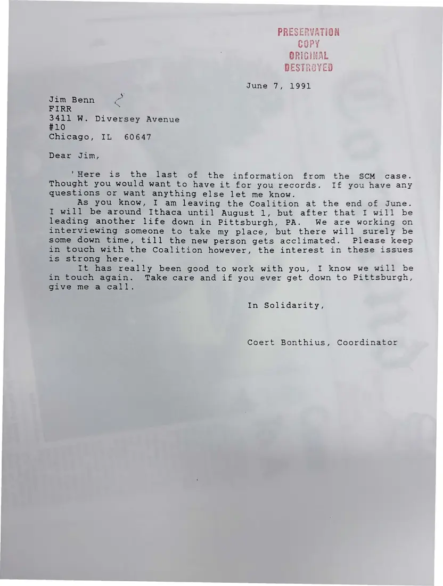

Letter, 5 pages
Coert Bonthius's closing letters on the Smith Corona case, June 7, 1991
June 7, 1991
As he prepares to leave the coalition, Bonthius sends the last of the information from the case to lawyer Mairead Connor, Julie Hurwitz of the Sugar Law Center, Jim Benn of FIRR, and Assemblyman Frank Barbaro.
Download or cite this itemPages


(open zoom view)Read the page text (machine-read, mostly readable)
This text was generated automatically from the photograph and has not been corrected. The image is the authoritative record.
PRESERVATION COPY ORIGINAL DESTROYED ; June 7, 1991 Mairead Connor Satter & Connor 608 State Tower Bldg. Syracuse, NY 13202 Dear Mairead, 'Here is the last of the information from the SCM case. Thought you would want to have it for you records. If you have any questions or want anything else let me know. As you know, I am leaving the Coalition at the end of June. I will be around Ithaca until August 1, but after that I will be leading another life down in Pittsburgh, PA. We are working on interviewing someone to take my place, but there will surely be some down time, till the new person gets acclimated. Please keep in touch with the Coalition however, the interest in these issues is strong here. It has really been good to work with you, I know we will be in touch again. Take care and if you ever get down to Pittsburgh, give me a call. iia Sellsick yes E57 ,. Coert Bonthius, Coordinator


(open zoom view)Read the page text (machine-read, mostly readable)
This text was generated automatically from the photograph and has not been corrected. The image is the authoritative record.
1 the effort and work you have put into that it is very much appreciated. In Solidarity, a ys - Coert Bonthius, Coordinator


(open zoom view)Read the page text (machine-read, mostly readable)
This text was generated automatically from the photograph and has not been corrected. The image is the authoritative record.
PRESERVATIDg Copy ORIGINAL DESTRevED June 7, 1991 Julie Hurwitz Sugar Law Center 2915 Cadillac Tower Detroit, MI 48226 Dear Julie, Here is the last of the information from the SCM case. Thought you would want to have it for you records. If you have any questions or want anything else let me know. As you know, I am leaving the Coalition at the end of June. I will be around Ithaca until August 1, but after that I will be leading another life down in Pittsburgh, PA. We are working on interviewing someone to take my place, but there will surely be some down time, till the new person gets acclimated. Please keep in touch with the Coalition however, the interest in these issues is strong here. It has really been good to work with you, I know we will be in touch again. Take care and if you ever get down to Pittsburgh, Give me a call. In Solidarity, Coert Bonthius, Coordinator


(open zoom view)Read the page text (machine-read, mostly readable)
This text was generated automatically from the photograph and has not been corrected. The image is the authoritative record.
i ) 'O, lgge—y PRESERVATION COPY ORIGINAL DESTROYED ‘ June 7, 1991 Frank Barbaro Assembly Labor Committee LOB Room 713 Albany, NY 12248 Dear Mr. Barbaro, * Here is information from the SCM case the Labor Coalition has been working on for the past year. Given you legislation on plant closings we thought you would want to have it for you records. If you have any questions or want anything else let me know. Please note the letter to Sherwood Boehlert. SCM is getting federal tax breaks as it moves jobs to Singapore. The SCM is considered by many people involved in monitoring the federal WARN law nationally to be an excellent example of its major flaws. We would be interested in giving you more information of you think it would be helpful. Thanks for you support. Sincerely, Coert Bonthius, Coordinator


(open zoom view)Read the page text (machine-read, mostly readable)
This text was generated automatically from the photograph and has not been corrected. The image is the authoritative record.
PRESERVATION Grey yey GU" 7 DiPiMaAs PhO GAS AW nk teen CATOAYT DESTROYED June 7, 1991 Jim Benn ‘ce FIRR % 3411 W. Diversey Avenue #10 Chicago, IL 60647 Dear Jim, "Here is the last of the information from the SCM case. Thought you would want to have it for you records. If you have any questions or want anything else let me know. As you know, I am leaving the Coalition at the end of June. I will be around Ithaca until August 1, but after that I will be leading another life down in Pittsburgh, PA. We are working on interviewing someone to take my place, but there will surely be some down time, till the new person gets acclimated. Please keep in touch with the Coalition however, the interest in these issues is strong here. It has really been good to work with you, I know we will be in touch again. Take care and if you ever get down to Pittsburgh, Give me a call. im Solidarity, Coert Bonthius, Coordinator
See something wrong, or recognize a person or event? Send a correction. If you hold rights in this item or think it should not be public, write to the same address.